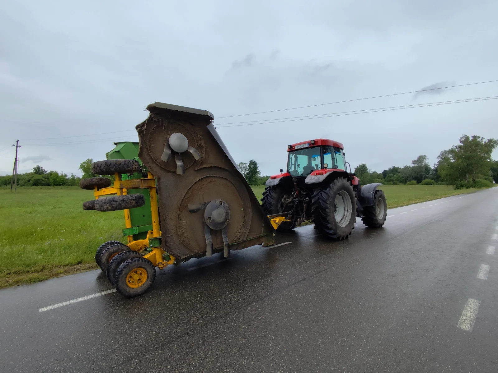
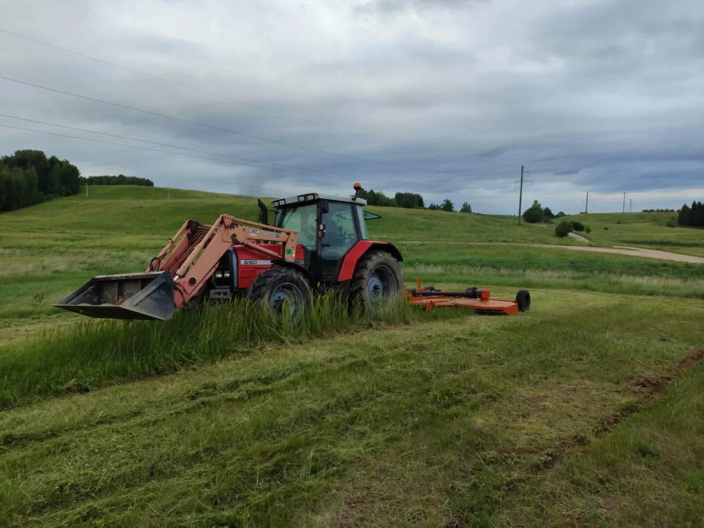
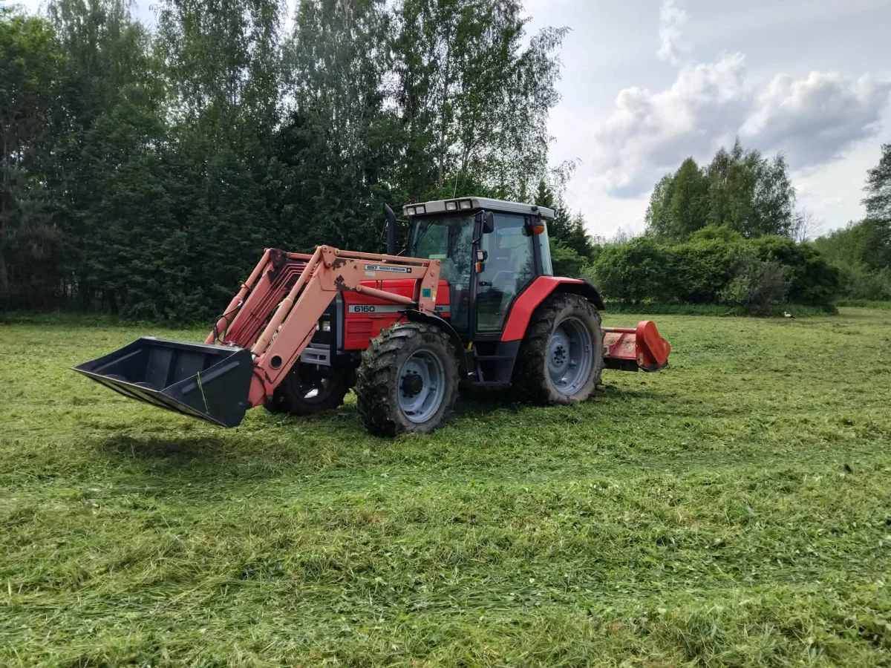
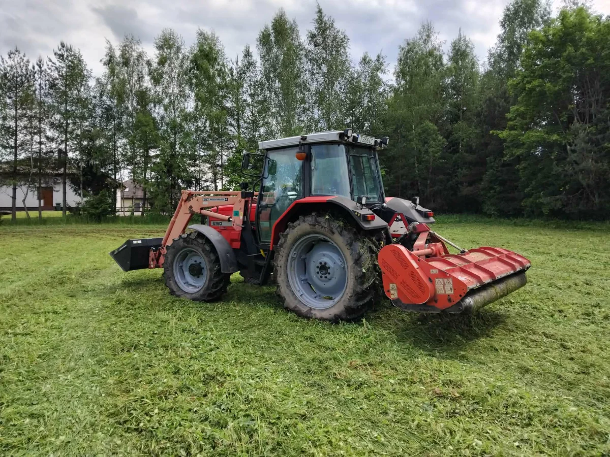
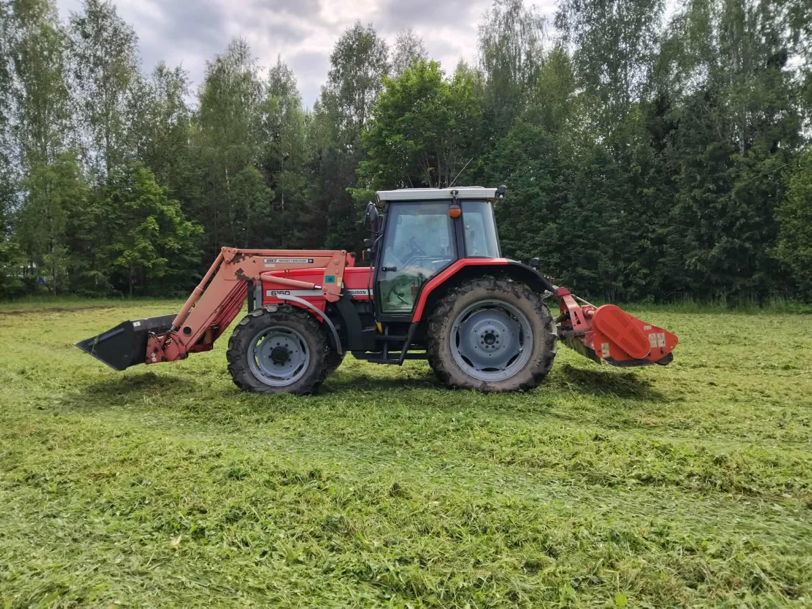
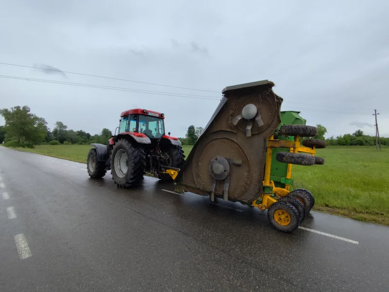
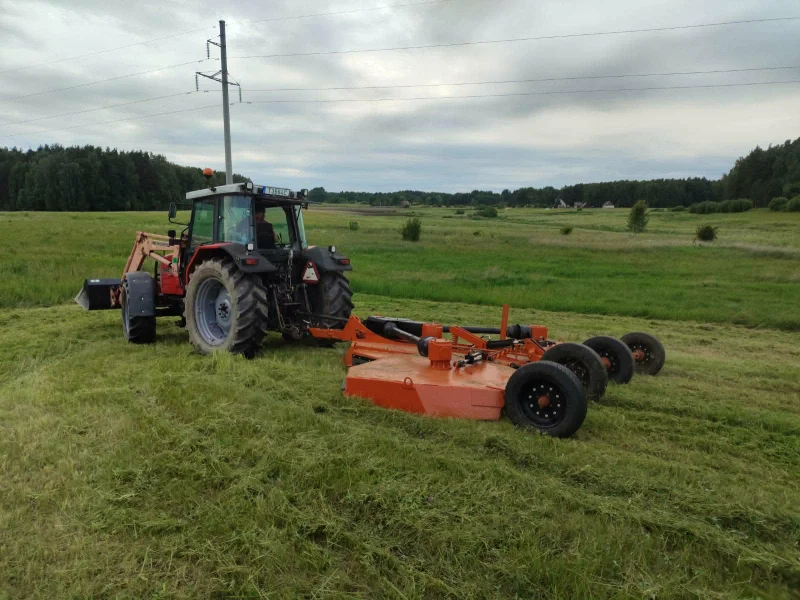
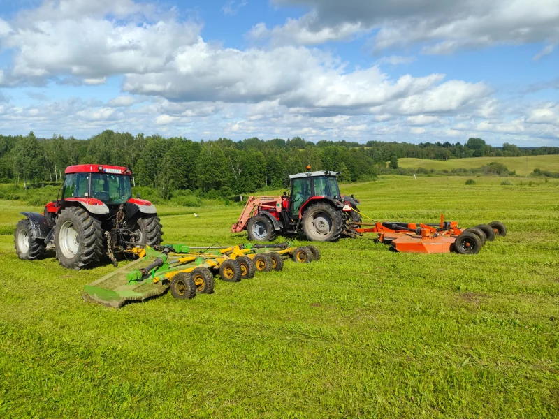
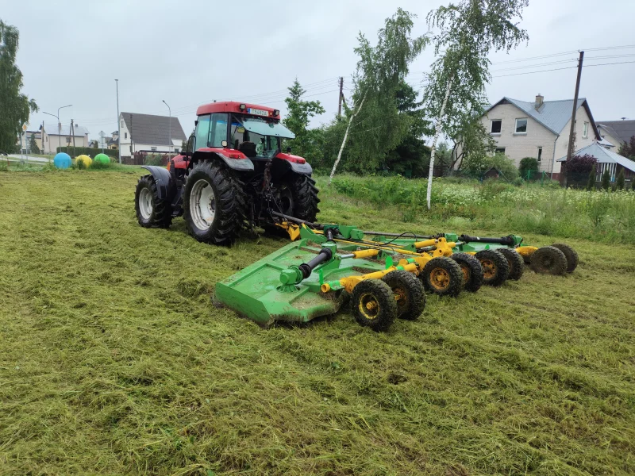

Utenos rajonas
Pievų
smulkinimas
Utenos rajone
Dirbame tvarkingai ir greitai.
Tvarkome apleistas ir deklaruojamas pievas – mulčiavimas, smulkinimas, šienavimas. Greitai, kokybiškai, laiku.


Paslauga – pievų smulkinimas, mulčiavimas ir šienavimas
Ką darome.
Pievų smulkinimas, mulčiavimas ir šienavimas Utenos rajone. Tvarkome apleistas ir deklaruojamas pievas. Dirbame su galinga Case, John Deere, Massey Ferguson technika.
Deklaruojamų pievų smulkinimas
Deklaruojamų pievų smulkinimas – tai deklaruotų žemės ūkio naudmenų tvarkymas susmulkinant žolę, kad plotai būtų prižiūrimi iki nustatyto termino ir atitiktų tiesioginių išmokų reikalavimus.
-
Pievą reikia nušienauti bent 1 kartą per metus iki ŽŪM/NMA nustatyto termino (paprastai vasaros pabaigoje). Pareiškėjams, registravusiems bičių šeimas, terminas gali būti pratęstas.
-
Visą deklaruotą pievų plotą smulkinti (be šienavimo) leidžiama, jei laikomas tam tikras gyvulių skaičius vienam pievos hektarui. Laikantiems mažiau – smulkinti leidžiama tik dalį ploto, priklausomai nuo turimų gyvulių ar bičių šeimų skaičiaus.
-
Smulkinti gali ir ūkiai, registravę bitynus – tiek ploto, kiek jie dengia pagal nustatytą normą.
-
Smulkinimas taip pat leidžiamas palaukėse ir sodų/uogynų tarpueiliuose, kuriuose auga žolė.
Tikslūs terminai ir normos kasmet skelbiami ir gali keistis – žr. ŽŪM – DUK arba pasitikslinkite NMA. Daugiau: pienoukis.lt.
Patirtis
12 metų patirtis
12 metų
dirbame pievų smulkinimo srityje
12 000+ ha
susmulkinta ir sutvarkyta plotų
Utenos r.
ir ~50 km spindulys aplinkui


Kaip vyksta
Nuo skambučio iki tvarkingos pievos.
01 Pasakote plotą, vietą ir pievos būklę.
02 Pasakome kainą ir suderiname laiką.
03 Atvykstame ir susmulkiname plotą.
04 Tvarkingas plotas + nuotraukos deklaravimui.
Kaina
Kaina pagal plotą
nuo 60 €
už hektarą
50 ha
susmulkiname per dieną
0 €
sužinoti kainą +370 625 14383
arba +370 625 34429
Galutinė kaina priklauso nuo ploto, pievos būklės ir atstumo.
Kur dirbame
Aptarnaujame visą Utenos rajoną
Bazė Utenoje. Dirbame visame Utenos rajone ir aplinkinėse seniūnijose – Tauragnuose, Užpaliuose, Vyžuonose, Saldutiškyje, Daugailiuose, Leliūnuose, Sudeikiuose ir Kuktiškėse.
Dirbame ir aplinkiniuose rajonuose – iki ~50 km nuo Utenos. Dėl tolimesnių vietovių pasiteiraukite telefonu.
Skambinti dėl kainos- Utena – bazė
- Aptarnaujami miestai
Mūsų technika · Case · John Deere · Massey Ferguson
Technika pievų smulkinimui




Dažnai užduodami klausimai
Dažnai užduodami klausimai
Kiek kainuoja pievų smulkinimas?
Kaina nuo 60 EUR/ha, priklauso nuo ploto (ha) ir pievos būklės – ar tai reguliariai prižiūrima pieva, ar apleistas, krūmais apaugęs plotas. Tikslią kainą pasakome telefonu po trumpo pokalbio apie plotą ir vietą.
Kas yra deklaruojamų pievų smulkinimas ir ar privaloma?
Deklaruotus plotus reikia palaikyti tvarkingus, kad būtų laikomasi išmokų reikalavimų – pieva nušienaujama arba susmulkinama iki nustatyto termino. Susmulkiname laiku ir pateikiame darbo nuotraukas.
Kuo skiriasi pievų mulčiavimas nuo šienavimo?
Mulčiuojant žolė susmulkinama ir paliekama vietoje kaip mulčias. Šienaujant žolė nupjaunama. Apleistiems, seniai netvarkytiems plotams paprastai tinka smulkinimas.
Per kiek laiko sutvarkote apleistą pievą?
Priklauso nuo ploto ir užaugimo. Vidutiniškai per dieną susmulkiname nuo 50 ha. Tikslų laiką suderiname iš anksto.
Ar dirbate visame Utenos rajone?
Taip. Dirbame Utenoje ir visame Utenos rajone bei aplinkinėse seniūnijose. Dėl tolimesnių vietų pasiteiraukite telefonu.